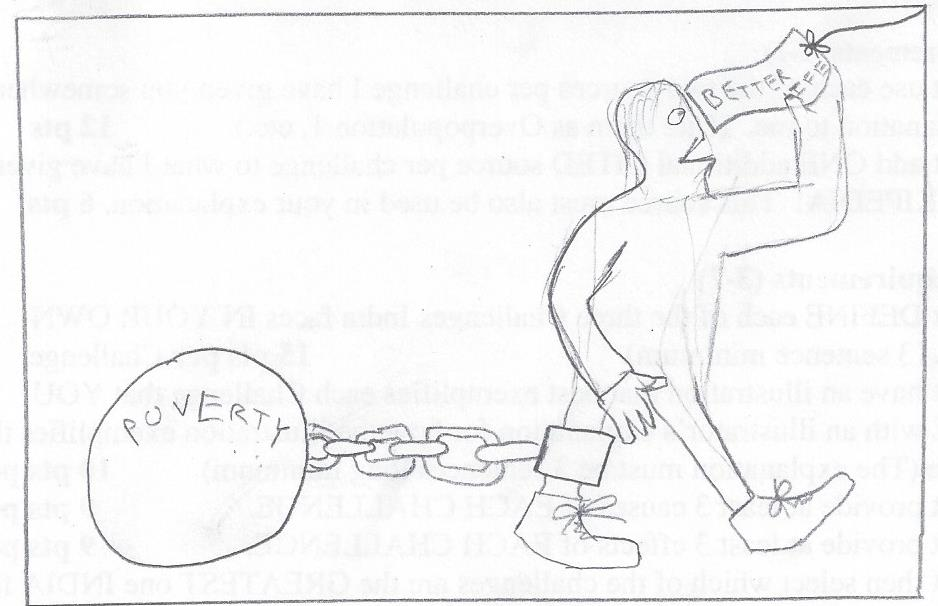

- 3: Definition
- Poverty is not earning enough money to support your family. The "poverty line" is the line where if you make less money, then you are considered to be in poverty.
- 4: Illustration
 This is an illustration of the struggles of freeing oneself from poverty. The person wants to get a better life, but is held back by poverty. - 5: 3 causes
-
- Overpopulation means that there is more people that together get the same amount of money.
- Lack of education means that less people get better-paying jobs.
- Being born into poverty means you will most likely grow up impoverished.
- 6: 3 effects
-
- Having more people in poverty lowers other countries' opinions of that country.
- More impoverished people increases disease rates.
- Poverty is a very difficult problem to overcome.
- 7: On its own page